LocalDiT
Sliding-window local attention learns short-term motifs from one sequence while reducing direct memorization.
Generating many plausible motion variations from one reference sequence.
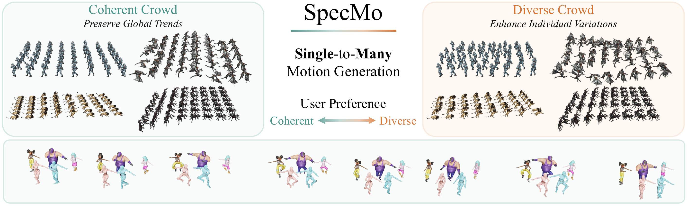
Select voiced or silent mode first, then play the demo.
SpecMo synthesizes many plausible variations across humanoid characters and non-human creatures from one reference motion.
Single-motion synthesis generates diverse motion variations from only one reference sequence, which is useful for customized characters, non-humanoid creatures, and other data-scarce animation scenarios. Existing methods often rely on local modeling to avoid memorization, but provide limited guidance for long-range motion trends and limited control over how generated samples should remain consistent or vary.
We present SpecMo, an efficient frequency-aware framework for single-to-many motion synthesis. SpecMo uses LocalDiT, a lightweight diffusion transformer with sliding-window local attention, to learn reusable motion motifs from a single example. A Global Spectral Prior preserves low-frequency structure during training, while Batch Spectral Control refines the initial noise batch at inference time to steer generation toward coherent or diverse results.
SpecMo combines local motion modeling, spectral structure, and batch-level control.
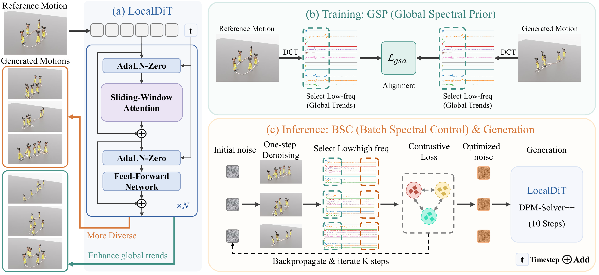
Sliding-window local attention learns short-term motifs from one sequence while reducing direct memorization.
Low-frequency DCT regularization gives soft guidance for trajectory shape, periodicity, and motion flow.
Frequency-domain pull and push objectives steer a batch toward shared structure or broader variation.
SpecMo preserves characteristic motion events while producing rich variations from the same reference.
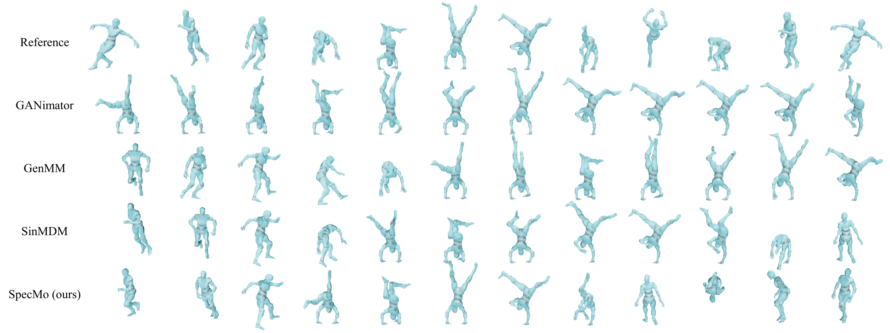
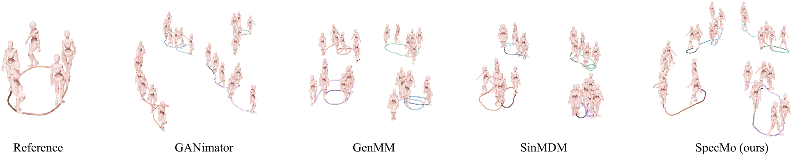
SpecMo supports practical authoring tasks from crowd generation to constrained editing.
Application 01
From a single reference motion, SpecMo generates crowd-like batches under different BSC settings. Pull-based settings produce coherent crowds with shared coarse behavior, while push-based settings produce diverse crowds with broader individual variation.
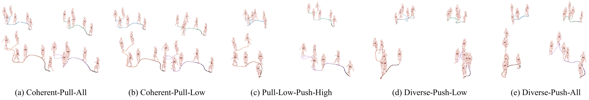
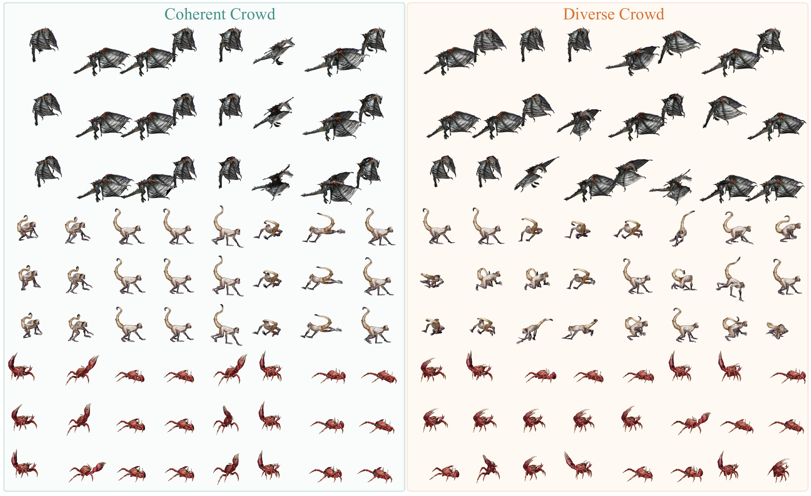
Application 02
Users can select a preferred sample as an anchor, then pull new samples toward it for refinement or push samples away from it for exploration.
Application 03
Masked denoising supports spatial completion, motion expansion, keyframe-guided generation, and in-betweening while keeping user-specified regions fixed.
Application 04
The local-attention backbone applies to sequences shorter or longer than the training reference, enabling long and variable-length synthesis with the same model.
We evaluate the contribution of the spectral prior and batch-level control.
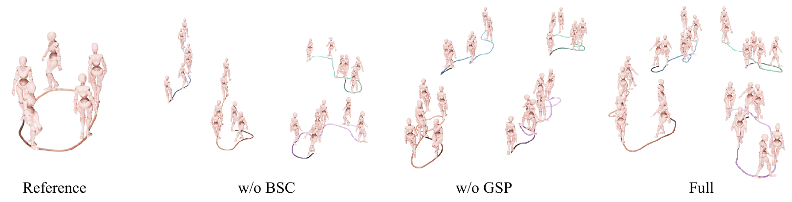
We measure runtime and memory under different batch sizes, BSC steps, and generation lengths.
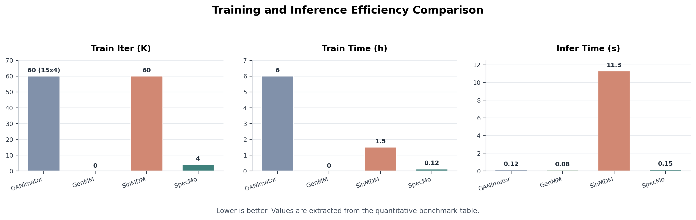
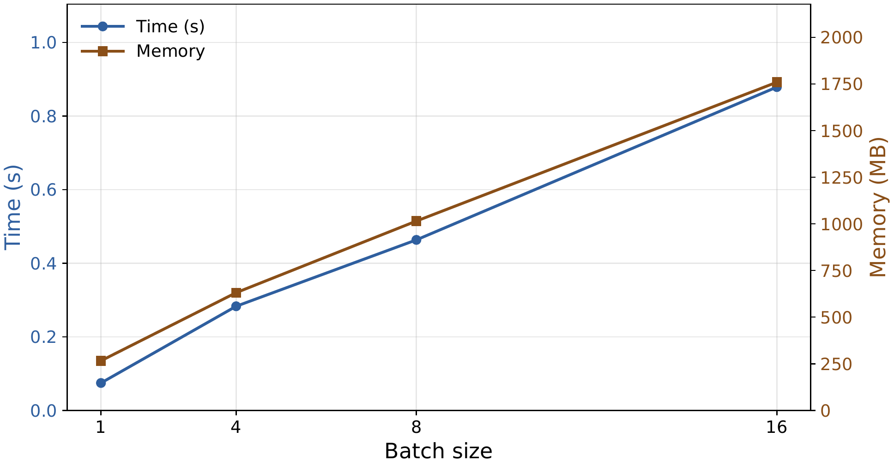
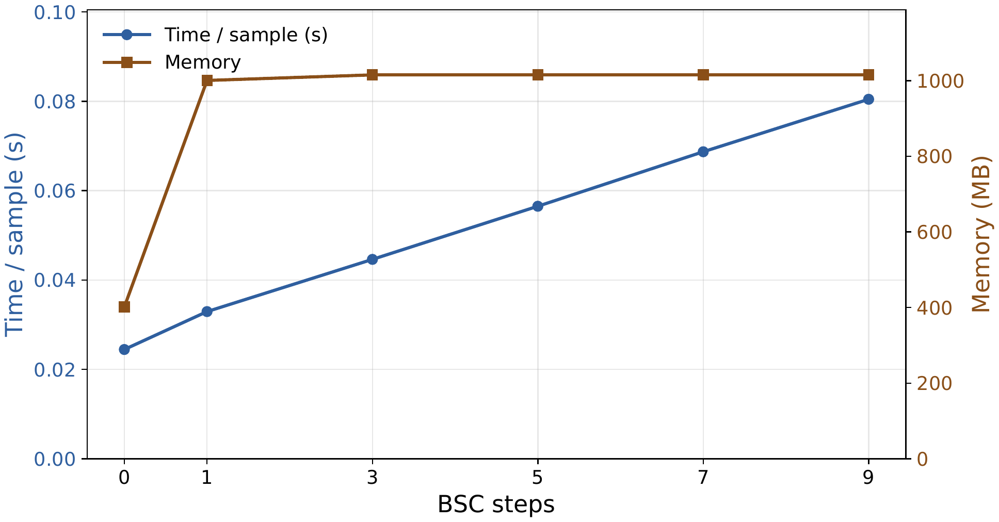
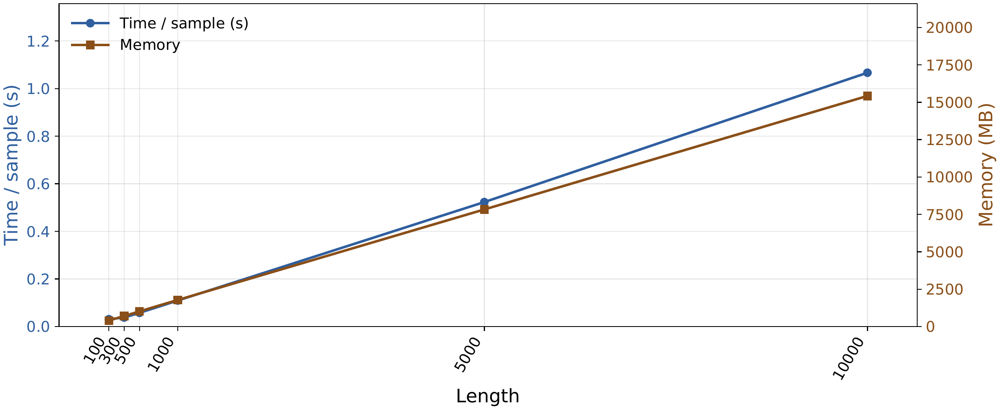
@article{anonymous2026specmo,
title = {SpecMo: Spectral Control for Coherent and Diverse Single-to-Many Motion Synthesis},
author = {Anonymous Author(s)},
journal = {Anonymous Submission},
year = {2026}
}